如果给出一个图形和一条直线，那么如何作出这个图形关于这条直线的对称图形呢？
如图9.1.11，实线所构成的图形为已知图形，虚线为对称轴，试作出已知图形的轴对称图形。作好之后，你可以通过对折的方法来验证你作得是否正确。
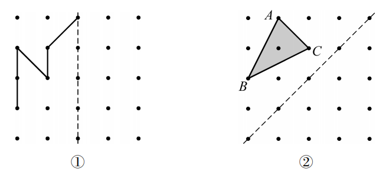
在格点图中，很容易找到格点关于对称轴的对称点，因此可以较方便地作出已知图形的轴对称图形。
如果没有格点，应如何作出某个图形的轴对称图形呢？
如图9.1.12，已知点 \(A\) 和直线 \(l\) ，要作出点 \(A\) 关于直线 \(l\) 的对称点 \(A'\) ，此时就需要过点 \(A\) 作直线 \(l\) 的垂线，与 \(l\) 相交于点 \(O\) ，然后在垂线上取一点 \(A'\) ，使 \(OA' = OA\) ，如图9.1.13所示。
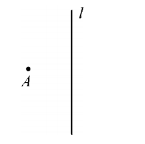
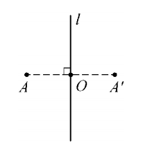
我们已经能利用尺规作图，作已知线段的垂直平分线，作已知角的平分线，那么如何利用尺规作图，过已知点作出已知直线的垂线，从而得到已知点关于已知直线的对称点呢？
已知点与已知直线可以有两种不同的位置关系：点在直线上；点在直线外。现分别按这两种情况作图。
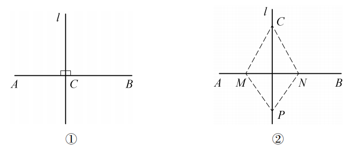
如图9.1.14①，由于点 \(C\) 在直线 \(AB\) 上，因此所要求作的垂线正好是平角 \(\angle ACB\) 的平分线所在的直线。
如图9.1.15，经过已知直线 \(AB\) 上一点 \(C\) ，试利用尺规作图，按下列作法准确地作出直线 \(AB\) 的垂线。
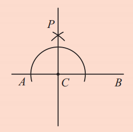
直线 \(CP\) 就是所要求作的垂线。
平角 \(\angle ACB = 180^\circ\)，其平分线 \(CP\) 分得 \(\angle ACP = \angle PCB = 90^\circ\)，所以 \(CP \perp AB\)。
如图9.1.14②，由于点 \(C\) 是垂线上的一个点，因此要作出垂线，只要再找到垂线上的另一点 \(P\)。
如图9.1.16，经过已知直线 \(AB\) 外一点 \(C\) ，试利用尺规作图，按下列作法准确地作出直线 \(AB\) 的垂线。
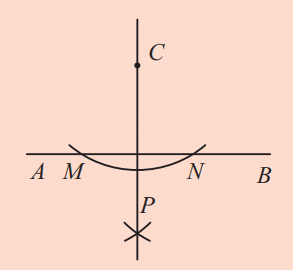
直线 \(CP\) 就是所要求作的垂线。
由作图可知 \(CM = CN\)，\(PM = PN\)，所以 \(CP\) 是线段 \(MN\) 的垂直平分线，因此 \(CP \perp AB\)。
如图9.1.17，已知△ABC和直线 \(l\) ，作出△ABC关于直线 \(l\) 对称的图形。
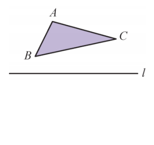
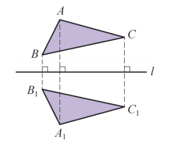
作法：
如图9.1.18， \(\triangle A_1B_1C_1\) 就是所要求作的△ABC关于直线 \(l\) 对称的三角形。
1. 在图中分别作出点 \(A\) 关于两条直线的对称点 \(A'\) 和 \(A''\)。
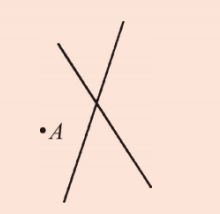
分别过点A作两条直线的垂线，在垂线上截取等长得到对称点。
2. 作出如图所示图形关于直线 \(l\) 的对称图形。
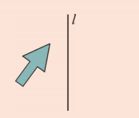
3. 如图，已知△ABC，利用尺规作图作出△ABC的边 \(BC\) 上的高。
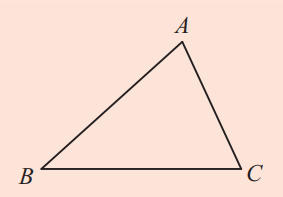
过点A作BC所在直线的垂线，垂足为D，线段AD即为高。可用点在直线外作垂线的方法。
转化思想： 作轴对称图形转化为作关键点的对称点。
分类讨论： 点在直线上和点在直线外作垂线的方法不同。
几何直观： 通过垂线、等长作图理解轴对称的性质。